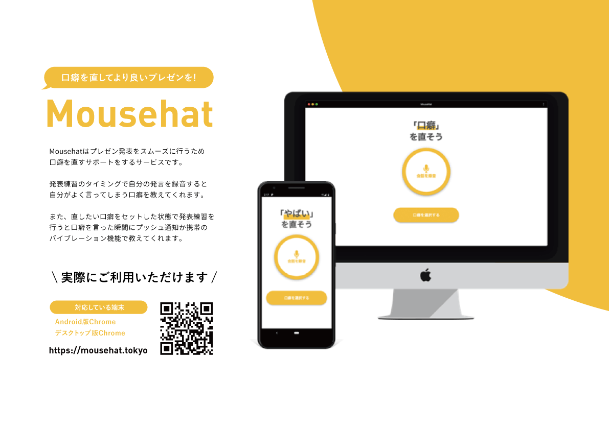

Mousehat

Mousehatとは
「自分の口癖を直すこと」を目的に「自分の口癖を知る」「口癖を言った時に教えてくれる」機能があるWebアプリを作成しました。私はFigmaを用いたUIデザインとCSSでの実装を行い、チームですり合わせをしながらサービスのUXデザインも行いました。
現在、Desktop版GoogleChromeとAndroid版GoogleChromeにのみ対応しています。
実際のページ
制作の振り返り Mousehatは自分の話し声を録音するだけで口癖を抽出してくれるため、自分が持っている口癖に気付くことができます。
さらに、自分の口癖が出てしまった時に、バイブレーションなどで教えてくれるため、自分が口癖を言ったことにリアルタイムで気付くことが出来ます。 また、 JPHACKS2019というハッカソンで企業賞（NTTレゾナント賞、日本ビジネスシステムズ賞、ベース賞）とイノベーター認定をいただきました。
作成プロセスや改善について
このアイデアが出たきっかけは、チームメンバーの1人が他の人に「“えっと”って口癖めっちゃ言うよね」と言われたことでした。そこから「口癖を直したい！」という軸で今回のWebアプリを作ることになりました。
初めは、「帽子で防止」というキャッチフレーズで「スマホを埋め込んだ帽子を使って口癖を改善する」というものでした。
しかし、ユーザーテストをしたことによって
- 帽子にスマホを入れたら重かった
- そもそも、なんらかの発表中や発表練習中に帽子をかぶるシーンは少ない
 そのため、帽子から離れて「口癖を直すサポートができる」という価値に絞ってWebアプリを作ることになりました。
そのため、帽子から離れて「口癖を直すサポートができる」という価値に絞ってWebアプリを作ることになりました。